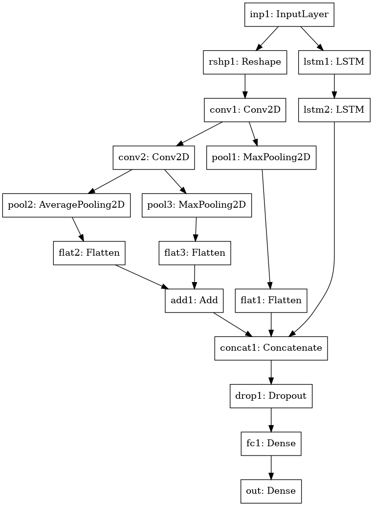
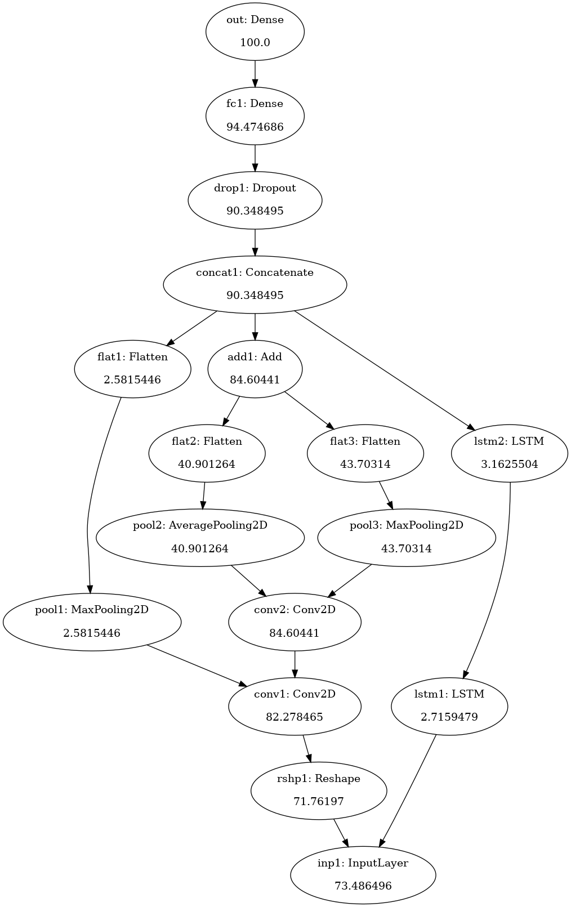

MNIST DATA (INPUT)
We have used the MNIST character recognition dataset to demonstrate the Arya-xAI framework. The MNIST dataset of handwritten single digits between 0 and 9, consists of 60,000 small, square grayscale images with resolution 28×28pixels. A custom architecture, which contains most of the commonly used components such as convolutions and lstms, is designed for this data.

NEURAL NETWORK USED
INPUT NETWORK ARCHITECTURE

OUTPUT NETWORK ARCHITECTURE

OUTPUT
Default Mode

Contrastive Mode


(Reference : BLUE - negative contrast , GREEN - positive contrast)